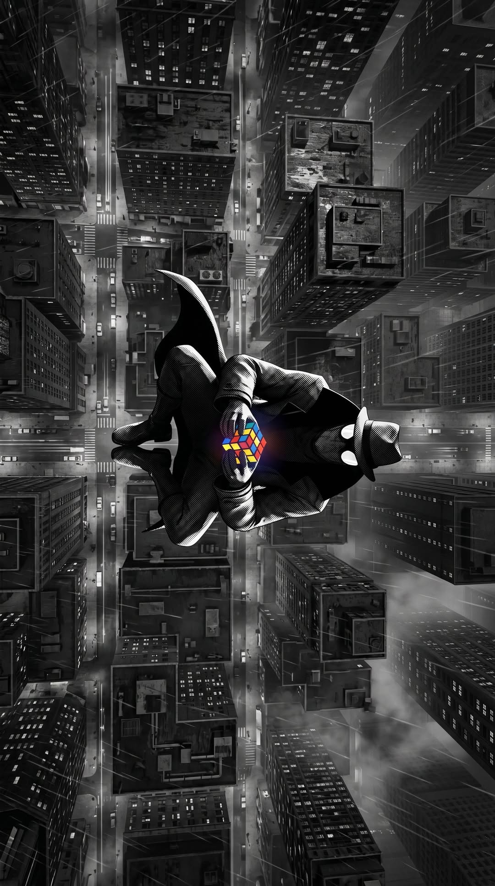
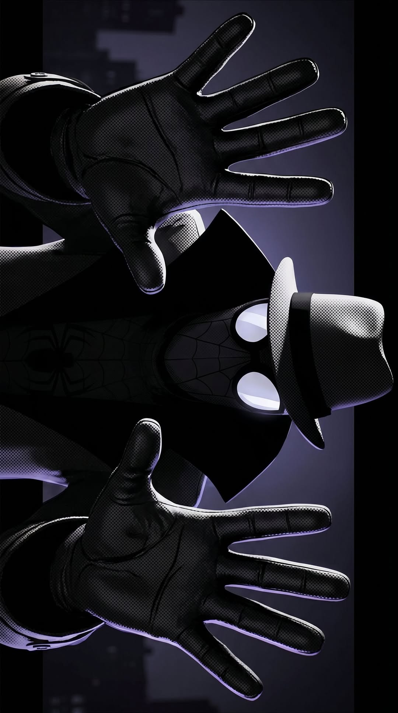
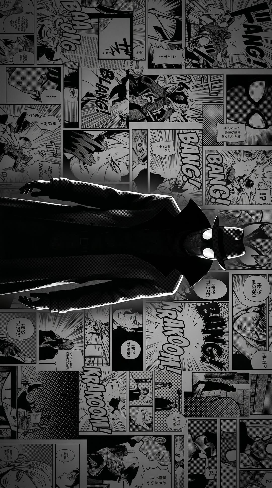

Spider Noir images.

Spider Noir is floating above the city while solving a Rubik's Cube. This scene highlights his calm and intelligent personality.

A close-up view of Spider Noir wearing his iconic hat and trench coat. His glowing white eyes create a mysterious appearance.

Spider Noir stands in front of comic panels, representing his classic comic-book origins with a dramatic black-and-white theme.
Spider Noir is floating above the city while solving a Rubik's Cube. This scene highlights his calm and intelligent personality.
A close-up view of Spider Noir wearing his iconic hat and trench coat. His glowing white eyes create a mysterious appearance.
Spider Noir stands in front of comic panels, representing his classic comic-book origins with a dramatic black-and-white theme.